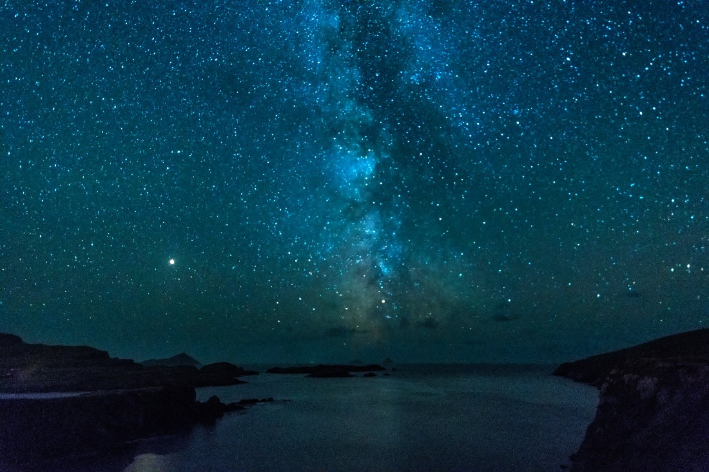

Astronomy Photography
These are some of the best websites and locations for astrophotography
Professional and amateur alike.
The world of astrophotography is an ever evolving world as camera equipment and star trackers
are becoming more and more accesible for the everyday photographer and nightsky enthusiasts
.webp) Best star trackers for astrophotography 2023: Space.com
Best star trackers for astrophotography 2023: Space.com
Some of the international observatories and the two greatest telescopes in the nightsky
These sites are the absolut pinnacle of astrophotograpy. Nasa and ESA just have other tools than we amatuers do
to take pictures like these, so please don't be dissapointed when your photos don't end up like these
Before we move on, lets have a quick quiz

what is the name of this famous picture?
And Which Observatory/telescope took this famous picture?
Some of our favourite astrophotography sites for avoiding light pollution and truly capturing
the magnificence of the nightsky
The sites below are some of our favourite amateur astrophotography sites
where everyday people and astro enjoyers can go spend the night, capture the nightsky in all its glory
and take it all in
- Death Valley National Park, California
- Kerry International Dark-Sky Reserve 
- Arches National Park, Utah